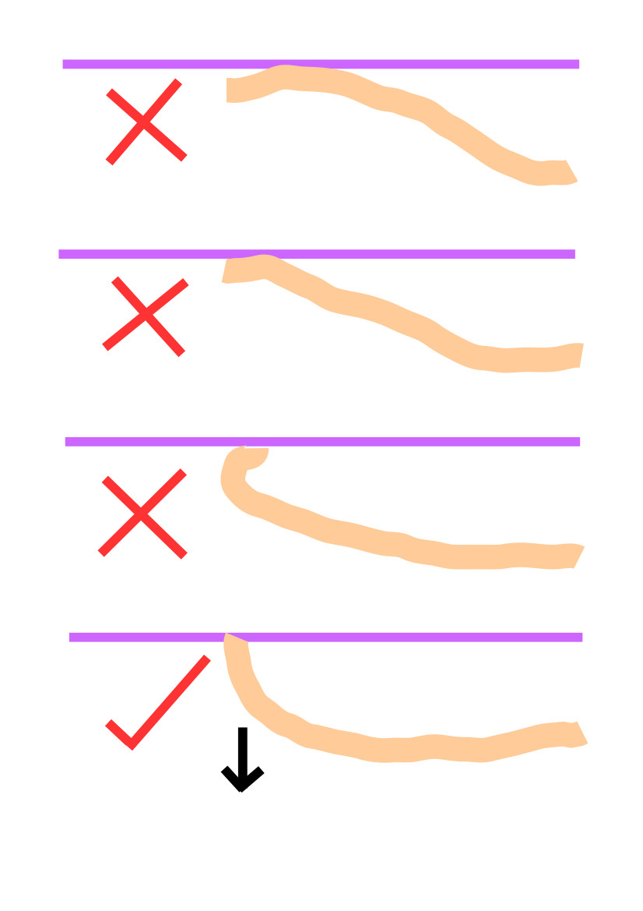

			
	    <div class="content">
	        <div class="centeralign">
	  			<h1>How to Pronounce T and D</h1>
	  			<p>Look at the diagrams below: the tongue position and movement for T and D are the same.  However, you must exhale (breathe out) when  pronouncing T.<br><br></p>
	  			<p></p>
	    	</div><!--centeralign-->
 		</div> <!--content-->            
  	

